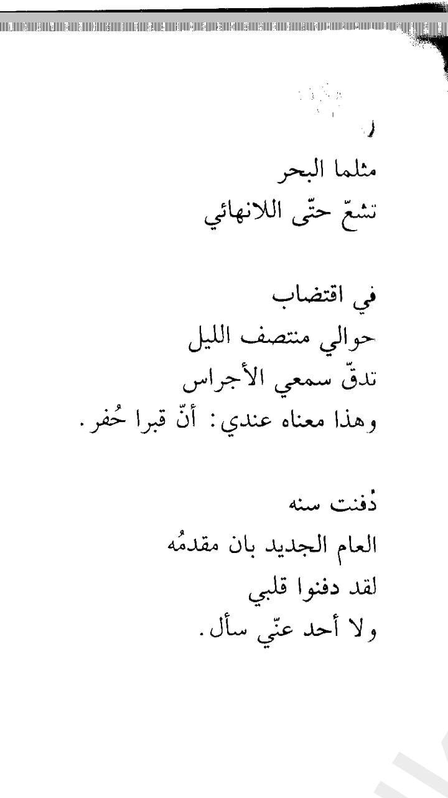
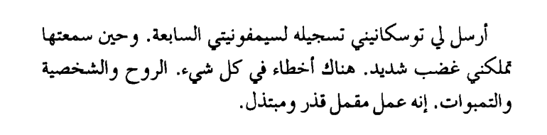

Intellectual Vomiting
I want to "vomit" some thoughts. Or I wanted, once I get my hands upon a keyboard, everything evaporates.
Before migrating from Hugo there was a post about creating a timeline-like page that I'd post on it simply, without formatting, without maintenance, just like how people used to tweet on twitter. I feel too tired to even think about how to implement this in elisp. I feel consumed. The day I hate the most of the year is New Year's Day. I really hate holidays in general. But, I can not tell a single one New Year's Day I've lived and I wasn't sad then. I don't know why exactly, maybe because I feel sad that time is going, another year is over. This makes me feel a kind of apprehension.
There's something I do every year, since 2017, I've been doing it every New Year's day. Nuh isn't lying sad and depressed on the sofa, it's a reading tuition. It started in 2017 when I was very sad, I don't remember why exactly, but I was reading ديوان نيتشه Nietzsche collected poetry, and I came through:
في اقتضاب
حوالي منتصف الليل
تدّق سمعي الأجراس
وهذا معناه عندي: أنّ قبرا حُفر

Sometimes I don't like to post literature or art that I love. I don't like people to misuse it, once I've seen a friend watching a movie that I recommended and doing lots of stuff simultaneously, this made me mad. Reminds me of something Shostakovich was saying when he saw a moron playing his music:

Anyway, It felt sad reading the very same poem each new year, I think I will do the same thing this year. I've a conceptual issue with 'happines' and 'pleasure'. This was what I was willing to talk about, but I forgot.